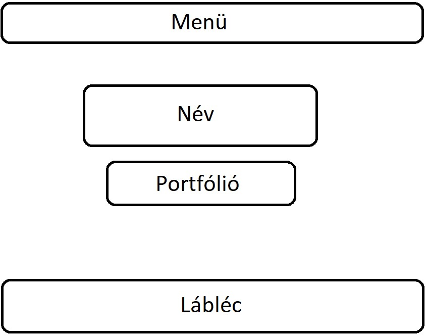
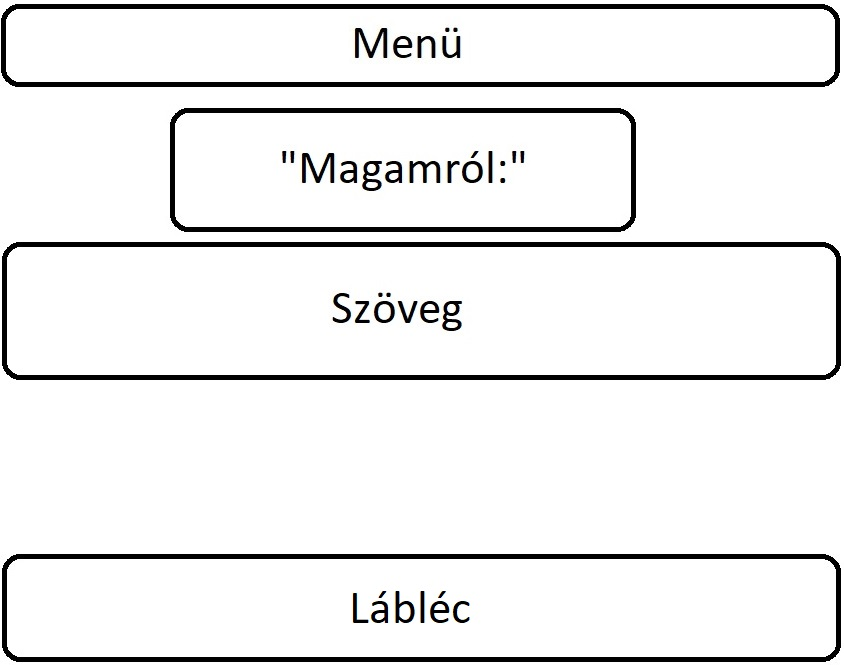
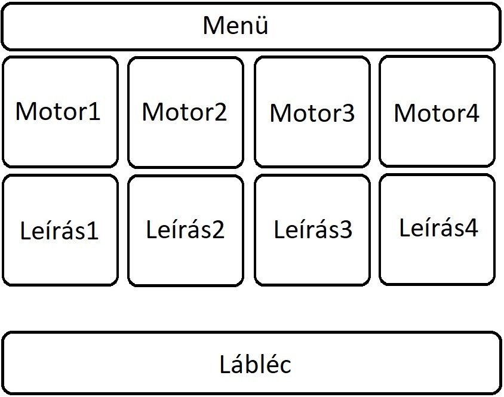

|  | FőoldalEredetileg szerettem volna láblécet is, de túl sok probléma volt vele, ezért úgy döntöttem végül, hogy kihagyom. |
|  | RólamEnnek a fülnek a megjelenése csak annyiban különbözik az eredeti tervtől, hogy a két szöveg egy kicsit lejjebb került. |
|  | MotorjaimA motorjaimról szóló fület eredetileg vízszintesen akartam elrendezni, de aztán rájöttem, hogy a függőleges elrendezés praktikusabb lesz. |